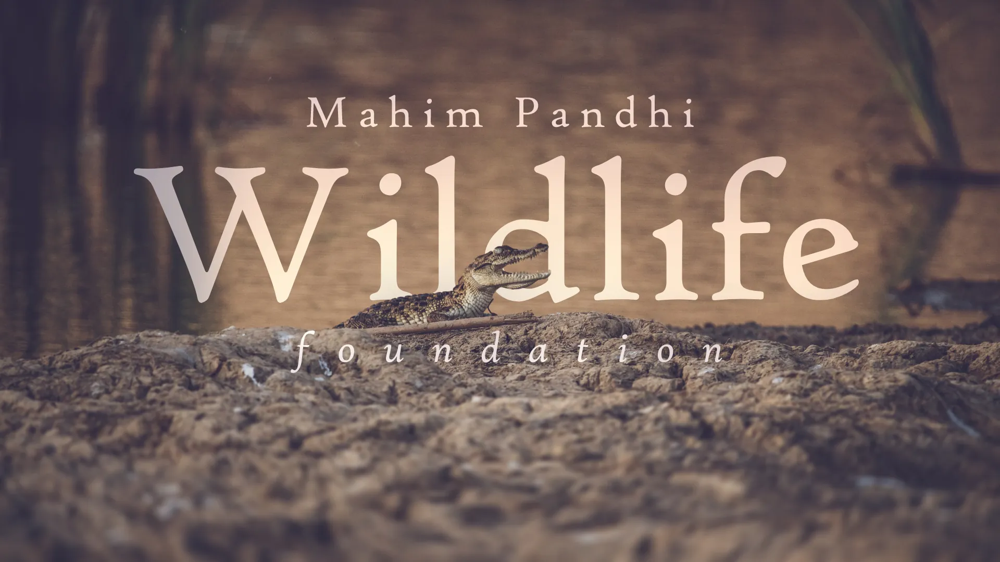

pandhi.org
Dedicated to wildlife conservation in Kutch (India) with a specialized focus on Mugger crocodiles (C. palustris).

Dedicated to wildlife conservation in Kutch (India) with a specialized focus on Mugger crocodiles (C. palustris).